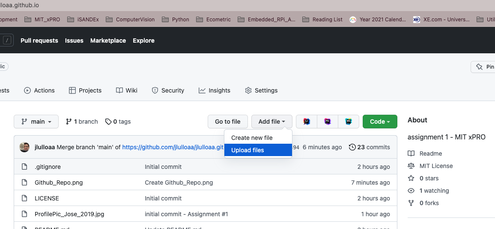
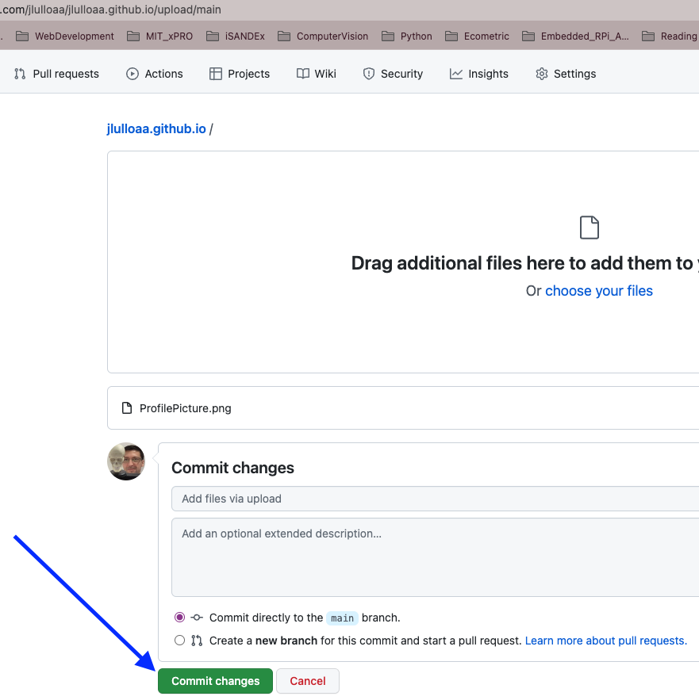
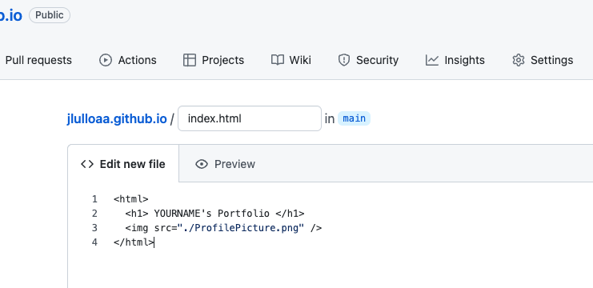

Jose's GitHub Portfolio
Jose's GitHub Portfolio
Assignment #1: Create a webpage in GitHub
- If you don't have a GitHub account, create one following the steps in here
- Create your first repository, following the steps in here. Make sure you name the repository as <yourusername>.github.io (<yourusername> is your GitHub's username). Your new repository should look like the one in the image below (with less files)
- Add a profile picture to the repository, by selecting a picture in your computer and uploading it to the repository. Click Add file and then Upload File (see image below)

- Once the file is uploaded, click Commit New File to add the file to the repository

- Create the index.html file, by clicking Add file and then Create New File. In the name box type index.html and add the text shown in the image below

- Scroll down and click Commit New File
- Open a new browser window and type <yourusername>.github.io (<yourusername> is your GitHub's username)